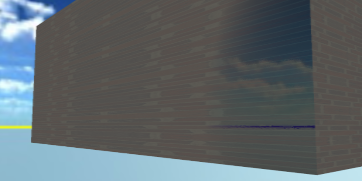
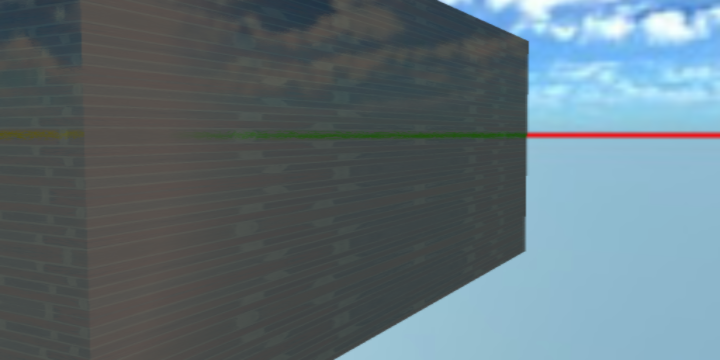
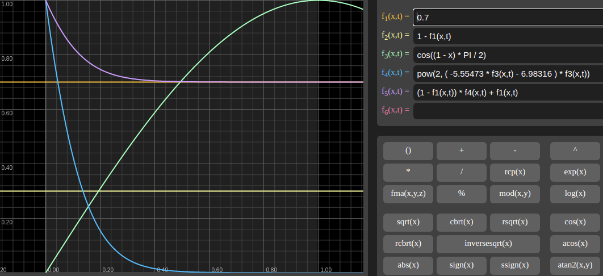

Fresnel Implementation¶
Schlick Specular¶
This is an approximation by Schlick[1], and presented by [2], used and copied from [3].
x-visual shader¶
source:
lib/xutils/shaders/glx.glsl.js
vec3 fSchlick_specular( vec3 col, vec3 incident, vec3 viewDir, float rough) {
incident = normalize(incident) ;
float dotLH = clamp( dot( incident, normalize(viewDir) ), 0., 1. );
float fresnel = exp2( ( -5.55473 * dotLH - 6.98316 ) * dotLH );
vec3 Fr = max( vec3( 1.0 - rough ), col ) - col;
return Fr * fresnel + col;
}
Schlick Fresnel¶
x-visual shader¶
source:
lib/xutils/shaders/glx.glsl.js
vec3 fSchlick( vec3 col, vec3 incident, vec3 viewDir, float rough) {
incident = normalize(incident) ;
vec3 halfDir = incident + normalize(viewDir);
float dotLH = 1. - clamp( dot( incident, halfDir ), 0., 1. );
float fresnel = exp2( ( -5.55473 * dotLH - 6.98316 ) * dotLH );
vec3 Fo = max( vec3( 1.0 - rough ), col ) - col;
return Fo * fresnel + col;
}`,
Additional Info¶
where:
f1(x, t) = 0.7 // normal color
f2(x, t) = 1 - f1(x, t) // 1 - F0
f3(x, t) = cos((1 - x) * PI / 2) // dot(V, H)
f4(x, t) = pow(2, ( -5.55473 * f3(x,t) - 6.98316 ) * f3(x,t))
f5(x, t) = (1 - f1(x,t)) * f4(x,t) + f1(x,t)
For Graphtoy, see [4].
References¶
[1] Schlick, Christophe, “An Inexpensive BRDF Model for Physically-based Rendering”, Computer Graphics Forum, vol. 13, no. 3, Sept. 1994, pp. 149–162. http://dept-info.labri.u-bordeaux.fr/~schlick/DOC/eur2.html
[2] Brian Karis, Epic Games, Real Shading in Unreal Engine 4 (Online PDF)
[3] Mrdoob, github.com, three.js/src/srcbsdf.glsl.js F_Schlick()
[4] Graphtoy v0.4 by Inigo Quilez, https://graphtoy.com